Allen Ship Center Content
This page has some of the resources and content you can use for your final project website. You are not required to use these resources! You can create a completely original idea, but you must create the content on your own. If you would like to write your own content or find your own pictures please keep in mind that you must obey copyright laws! Do not use text content or images that you do not explicitly have rights to use. All images should be hosted (uploaded) into your final project and not linked to from other websites.
Expectations:
If you choose to make Allen Ship Center your final project site keep in mind your grading will be more strict. We are providing you with a majority of your websites content and design. You must go above and beyond in demonstrating the skills you learned in this course.
Text Content
Each of the collapsed sections below contains text content for a page in your final project website. This text content has very limited formatting. It will be your job to place the content into the correct spots in your project, add appropriate HTML elements, and CSS styling. You will have to write some of your own content. Make sure any content you add fits with the style and flow of the website. Using only this content in your final project site will keep you from getting top marks. Be creative and apply yourself to the final project site.
Thank you for stopping by the Allen Ship Center website today! Here you’ll find all of the information about what we do, how we do it, and how we can help make your shipping experience optimal.
We are a small business that specializes in an excellent shipping experience in Allen, TX. Quality shipping services here in Allen can be difficult, frustrating, or generally unpleasant to find – so it’s a good thing you found us! We are all about making your day easier and better. Please take a look some of our most popular services below. Need more help? Contact us.
We truly are your one-stop-shop for all your shipping needs. If you would like to see our full range of services our Shipping Page and Services Page have all the details. If you still can't find what your looking for you can Contact us any time!
You can count on us to solve your office service problems. With office services like faxing, shredding, copying, scanning, and printing located in Allen, Texas. You'll enjoy:
- Affordable Services: We make sure our services are reasonably priced for just about any sized job.
- Do It For You Service: Nothing is more annoying than pushing a button you think will fax your letter, and making a copy of it instead. Don’t worry – we’ll get it done for you. And we’ll give you a confirmation notice, too.
- Receive It For You: You can count on us to not only send faxes, but to get them for you as well. We can also print things off of email and hold them for you at special request.
Our fax number is 555-555-5555. Feel free to give the number out to whomever and make sure they put your name and phone number on the cover page. We’ll make sure you get it as soon as we do.
| Service | Unit | Price |
|---|---|---|
| Copies (Color) | Per one copy | .45 |
| Copies (Black and White) | Per one copy | .10 |
| Scanning | Per page | .75 |
| Faxing | Per page | 1.00 |
| Shredding | Per pound | 1.00 |
We have a pack-it-yourself station that has free shipping supplies for your needs. Stickers, tape, pens and pencils – all right there at your disposal. Best of all, we aren’t going to nickle and dime you for it. Just come on in and use as much as you need.
If packing shipments isn't your thing we have you covered! Your great-great grandmother’s beloved rocking chair is going to the next relative in the line. You want to ship your son your famous meat pie and cake for his birthday, but it needs to stay frozen. You want to send an iPad to your pappy for Christmas in the UK. No matter what unique situation you have we'll take care of it.
Allen Ship Center was founded in June of 2010 by Jerry Maylor. Headquartered in Allen Texas, Allen Ship Center is a premier and distinguished expert in international shipping. Since our founding we strive to serve residential and business customers in every sector. From the auto industry, furniture businesses, clothing lines, heavy machinery manufactures, telecommunications industry, science centers, and every small business or personal shipper in between. We cover it all!
With partnerships with every major shipping provider from small parcel to full truck load (FTL) we can provide your company with the most efficient shipping support to over 120,000 destinations worldwide, all at an amazing discount!
We offer intelligent supply chain solutions, discounted shipping rates, and unmatched customer support with no minimum volume requirements. We are so certain that you’ll love our service we allow you to ship at discounted rates without an account!
If you are interested in becoming a consignee with Allen Ship Center please Contact Us.
KittyBunny Designs
Owned by Rachel and Scott Johnstone
This adorable couple makes the most adorable cards and other crafts as well, but here at the Allen Ship Center Center, we feature eight of their cutest designs. The Johnstones are new to the world of selling their crafts, but have been creatives for a long, long time! We do hope you’ll enjoy what they have to offer – and don’t forget, they can always make custom designs by request!
Images
Below is a mix of logo and company images you can use in your final project website. Feel free to pick and choose what you feel is best for your websites design. You can download an image by right clicking on it and choosing download image; or some other similar option depending on your operating system.
You can also download a ZIP of all these images if you like. The Download is 2.3 megabytes so do not download it if you have a slow internet connection or data limits.
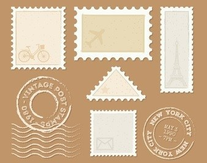
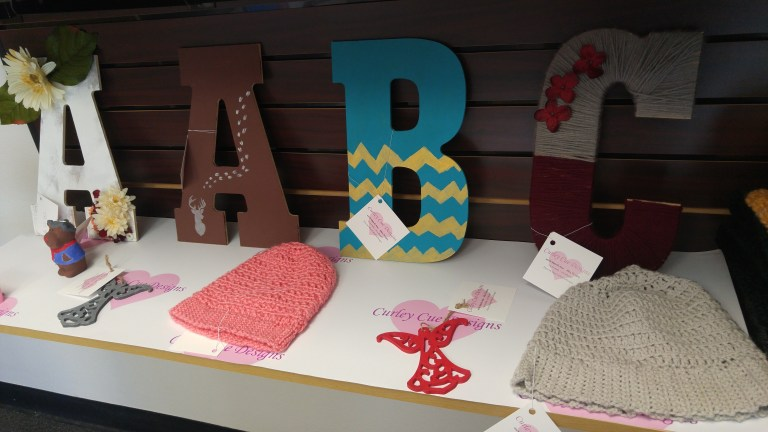
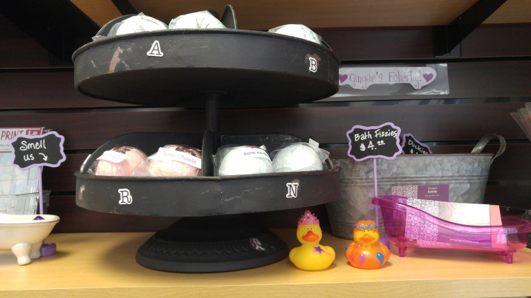
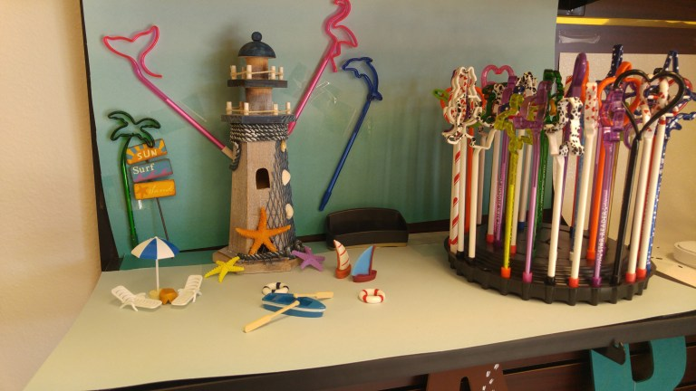
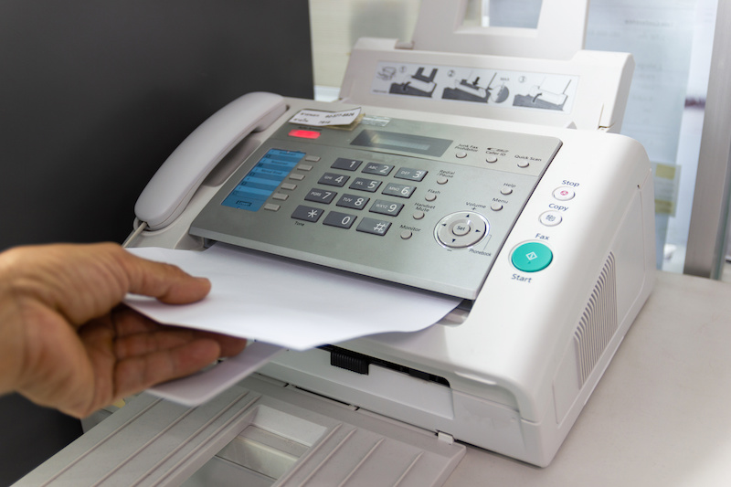
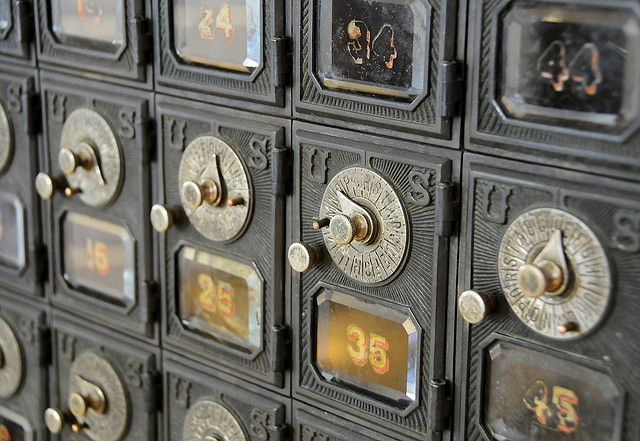
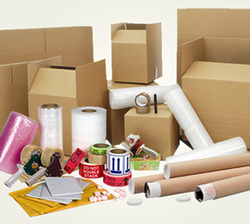
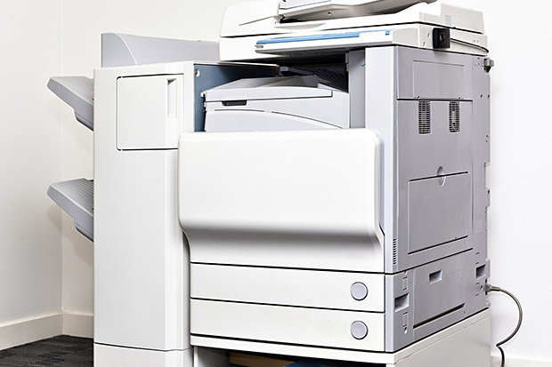
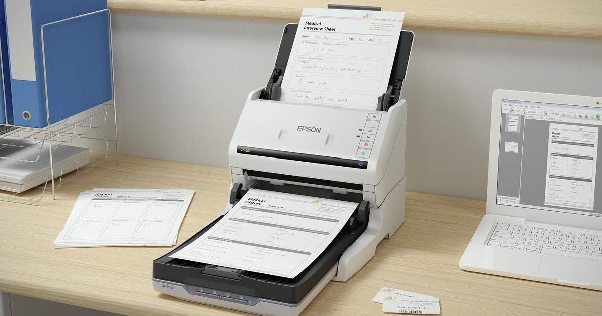
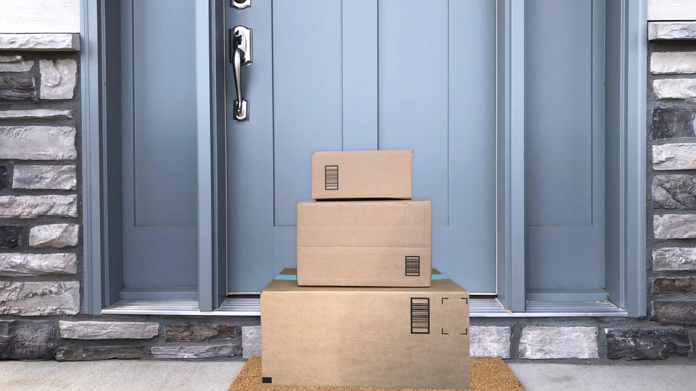
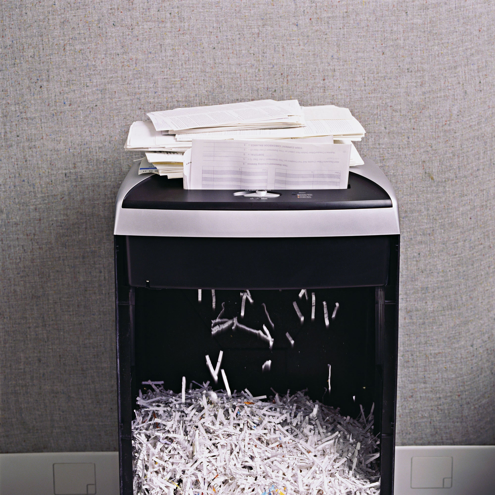
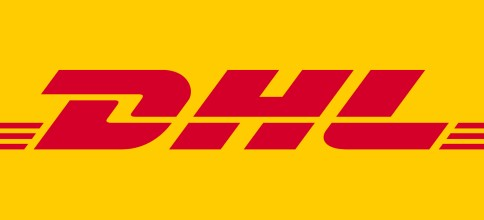
Compiled: 2021-03-23 @ 04:00:44